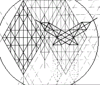
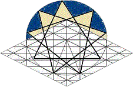

Haste Makes Waste
Although it was expedient to share my testimony in this treatment of Adam Kadmon, the text has taken a spiral course in relation to the central topic of the presentation. The dynamics of that spiral will be presented in the illustrations concerning the Crown Diamond as it speaks to the messages to the Churches of Asia, but this discussion ought presently to concern itself more responsibly with an investigation of meanings of the sephiroth, themselves, as many have no previous acquaintance with this tradition.

Before resuming the presentation, however, it is necessary for me to digress yet once more to remind readers of a message that came when I first began writing, by a series of dreams. I was instructed to forego the modern-day practice of providing copious scriptural references.The dreams indicated that the practice is restrictive to the free movement of the Spirit as I write, being therefore in violation of the precept, "Quench not the Spirit." Furthermore, it was made quite clear that a robotic malevolence lurks in the modern practice when used to its best effects; at its worst, the practice fosters a concomitant focus on the temporal author above focus on the Source he serves. I've not deleted biblical references, but in all text yet to be written, however, I will endeavor to write after the fashion of the apostles: quoting as I am led and alluding to scripture without designating allusions by slavish references.
To continue, briefly, with discussion of the spheres, no single exposition of the sephiroth can convey their vast applications as testimonial symbols of the Logos. We must agree to consider their cohesive implications and interactions along one line of thought only so far as that context takes us. When it no longer serves, we must prove ourselves prepared to ask about the validity of our conclusions and the direction further investigations should take.
Also: because we know from testimony of elders that the letter of scripture kills, we certainly must not permit ourselves to succumb to a literalism with regards to these symbols or the allegories they engender!It will not always-- will, perhaps, never-- be that a single line of thought will be exhausted of possible extension; but rather(were we to persist in pursuit of ramifications of a particular concept at a given point in our development regardless of spiritual factors of which we might be unaware), that our lines of thought might lead us beyond the parameters of foundational understanding and into the shifting sands of speculation.
By such means do doctrines developed through such persistence become idolatrous and demonic. We are instructed by the words of Spirit and Life to follow the Spirit as it speaks within our hearts, not by choosing to follow its reflection within our own thoughts, which either lag behind or forge ahead, outside of the Spirit's leading. Our thoughts, along with all other dimensions of being, are to be offered in living sacrifice to HaShem.
This same mental orientation is therefore recommended in study of the scriptures themselves, also: the lively oracles of myhla Elohim address themselves to many contexts by the same Spirit, according to the questions prevalent in the mind of the reader at a given reading. As the questions are reformulated according to accrued understandings that come in answer to secular experience and spiritual growth, the oracles attune their voices, at the Spirit's directive, to the intellectual and spiritual contexts into which they are received.
To read from a new level is not necessarily to dismiss the Word's meanings at previous levels, but to advance in the spiritual interplay of point, counterpoint. To read with willful attachment to a previous level, however, is to resist being led by the Spirit; and whatsoever is not of faith is sin. Sin is "error," literally; and to offend in one point is to offend in all.
| The Sermon on the Mount | ||
site |
 |
book |